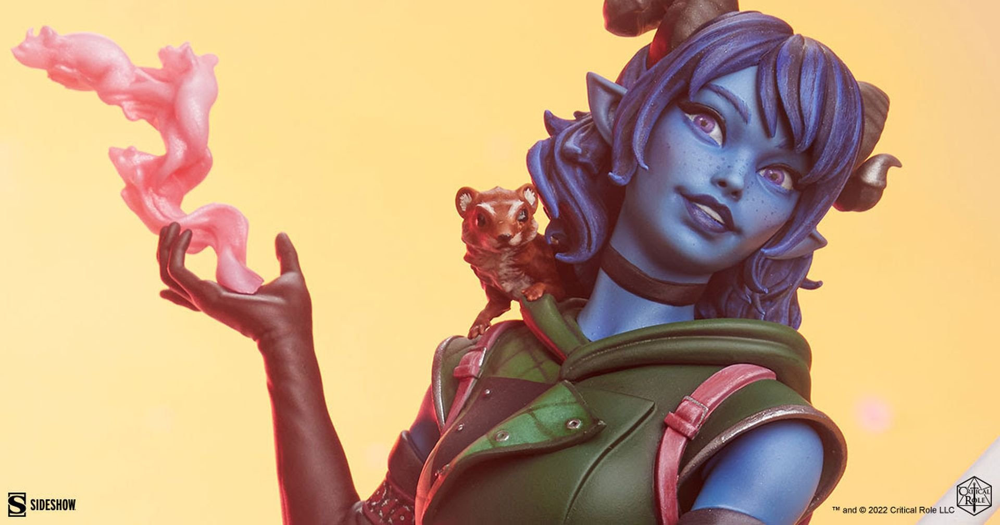
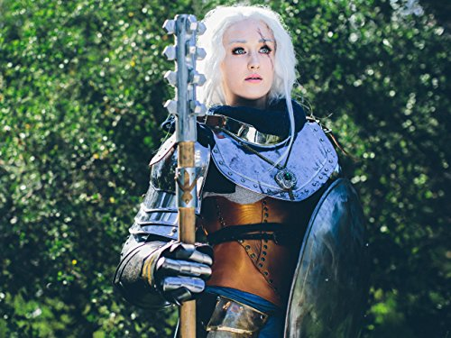
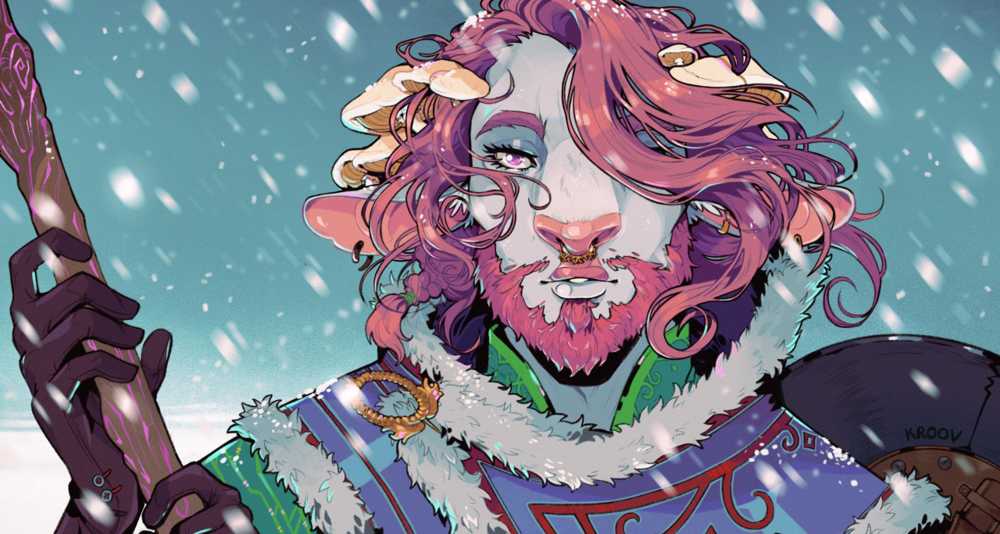
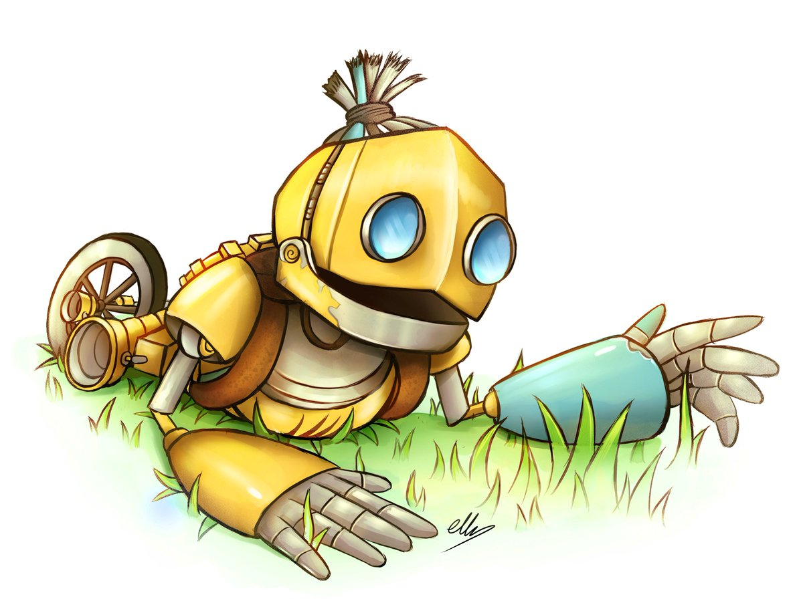
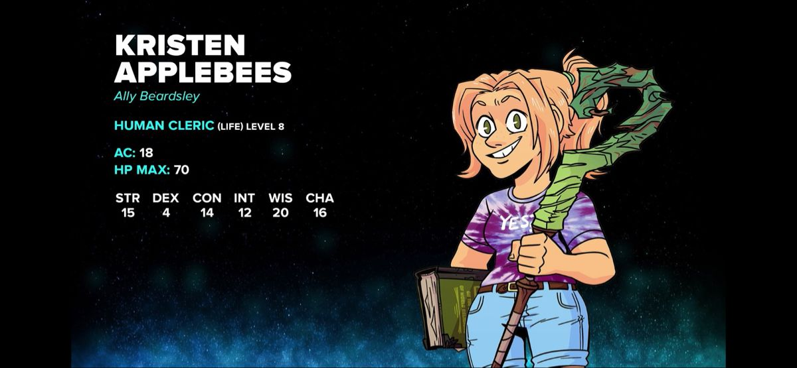

Jester Lavorre, Critical Role, Mighty Nein

Pike Trickfoot, Critical Role, Vox Machina

Caduceus Clay, Critical Role, Might Nein

Fresh Cut Grass, Critical Role, Bells Hells
Kingston Brown, Dimension 20, The Unsleeping City

Kristen Applebees, Dimension 20, Fantasy High
In Dungeons & Dragons 5th Edition, the Cleric is a divine spellcasting
class
chosen by deities to serve as their champions. Clerics are healers,
protectors, and wielders of divine power. They can both mend wounds
and smite foes, depending on their chosen domain, which reflects
their deity's portfolio. Whether they're devoted to life, war,
or knowledge,
Clerics are unwavering in their faith and wield
powerful spells
to aid their allies and vanquish their enemies. They often carry a
sacred symbol,
such as a holy symbol or a mace, representing their connection to the
divine.
Clerics are pillars of faith and justice in the world of
D&D.